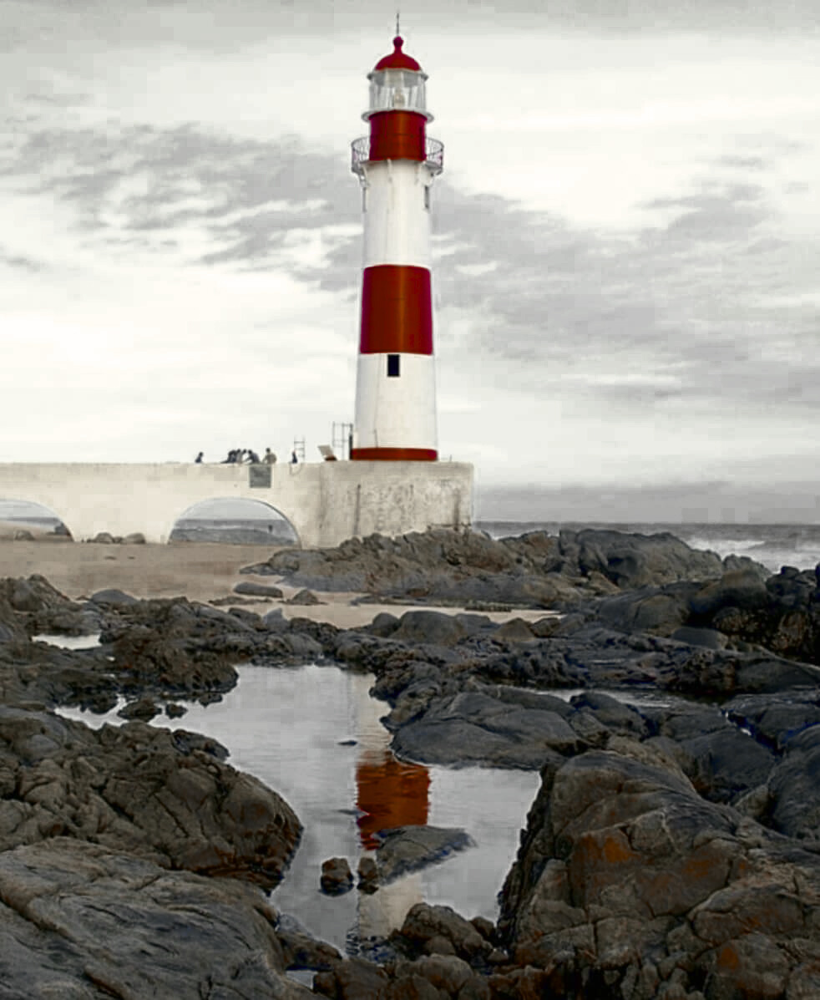

Salvador
Salvador, a primeira capital do Brasil e capital do estado da Bahia, é uma cidade histórica e vibrante, conhecida pela sua forte cultura, música e culinária. Fundada em 1549, a cidade carrega uma herança rica do período colonial, refletida na sua arquitetura e tradições.

Acesse meus exercícios de laboratório
Disciplina: Desenvolvimento de Interfaces Web
Esta disciplina tem como objetivo explorar os conceitos fundamentais e práticas do design e implementação de interfaces para a web. Aqui desenvolvemos laboratórios práticos, exercitando HTML, CSS, JavaScript e técnicas modernas de usabilidade e acessibilidade.